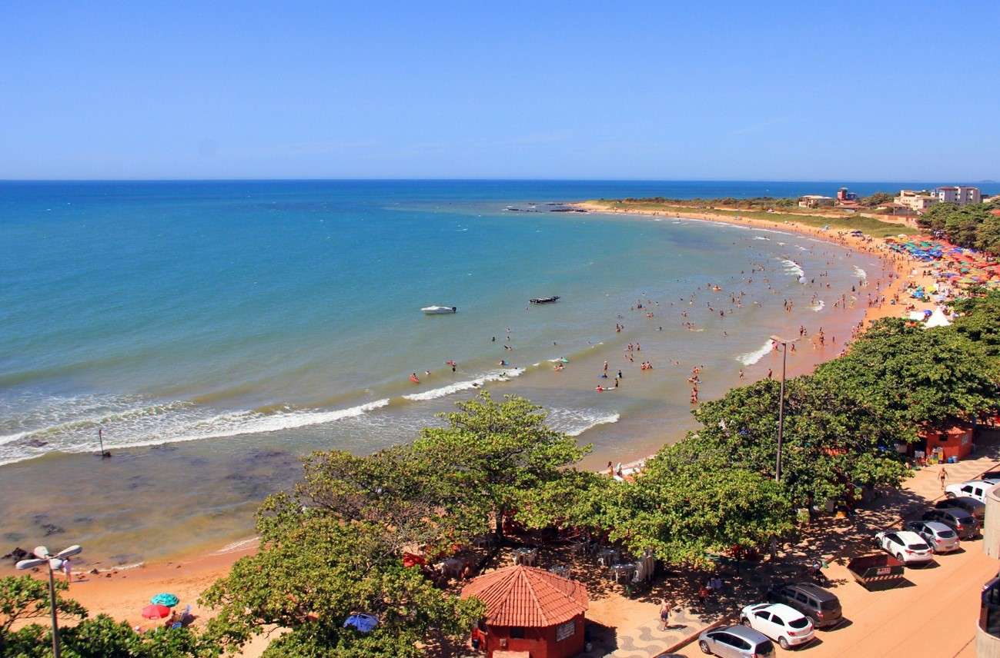

Praia de Castelhanos - Anchieta
26 de maio de 2025

Praia de Castelhanos - Crédito: Divulgação/ Prefeitura de Anchieta
O município de Anchieta possui 23 praias. Algumas badaladas e com infraestrutura completa e outras pouco frequentadas e com paisagens bucólicas. Uma praia do município que ser tornou muito famosa, até por ganhar a votação popular de praia mais bonita do sul do estado do Espírito Santo, foi a praia de Castelhanos. A praia conta com uma infraestrutura completa de bares, restaurantes, hotéis e pousadas.
Durante as marés baixas se formam várias piscinas naturais de águas quentes, em meio às lateritas (rochas com alto teor de ferro e/ou alumínio oxidado) da região, onde habitam espécies de fauna e flora. São as poças de maré, habitat natural e protegido pelo meio ambiente.
Poças de maré da praia de Castelhanos - Crédito: Divulgação/ Prefeitura de Anchieta
A poucos quilômetros, na mesma costa, fica da praia Boca da Baleia que conta com acesso mais restrito e paisagens paradisíacas.
Praia Boca da Baleia - Crédito: Divulgação/ Blog 99 praia
Praia de Santa Cruz - Aracruz
26 de maio de 2025
A Praia de Santa Cruz é uma das mais bucólicas paisagens do município, com a vegetação típica de restinga. As formações rochosas, a Reserva de Desenvolvimento Sustentável Municipal que existem no seu entorno, enriquece ainda mais esse cenário tornando ideal para o lazer, tranquilidade e conservação da biodiversidade. A praia dispõe também de equipamentos e serviços disponíveis para turistas como: hotel, pousadas, passeios de escuna e barcos, restaurantes e bares com uma gastronomia requintada e especializada em frutos do mar.
Praia de Santa Cruz - Crédito: Divulgação/ Prefeitura de Aracruz
Um diferencial desta região é que, por estar situada no estuário do rio Piraquê-açú, ela conta com praias de água salgada, água salobra e água doce.
Praia d'Ulé - Guarapari
26 de maio de 2025
O município de Guarapari, apesar de estar inserido na Região Serrana do Espírito Santo, é muito conhecido pelas suas belas praias, contando também com lagoas, cachoeiras e unidades de conservação. Dentro do Parque Estadual Paulo César Vinhas, localizado no bairro de Setiba, podemos encontrar a praia d’Ulé. Apesar de estar dentro da unidade de conservação, a praia d’Ulé é mais frequentada por surfistas. Por possuir uma geomorfologia que propicia a formação de ondas, principalmente no período de abril à agosto, com a entrada das frentes frias, a praia se torna um grande atrativo para a prática do surf.
Ondas da praia d'Ulé - Crédito: Divulgação/ Blog Guia em Guarapari
Praia d'Ulé - Crédito: Divulgação/ Blog Ondas Online